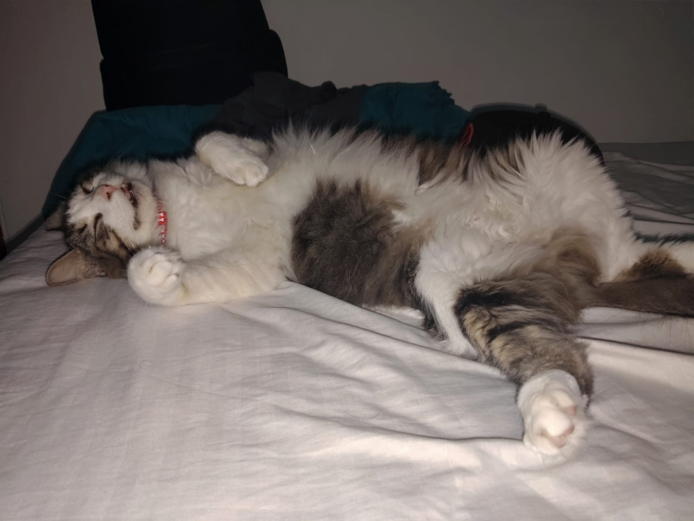
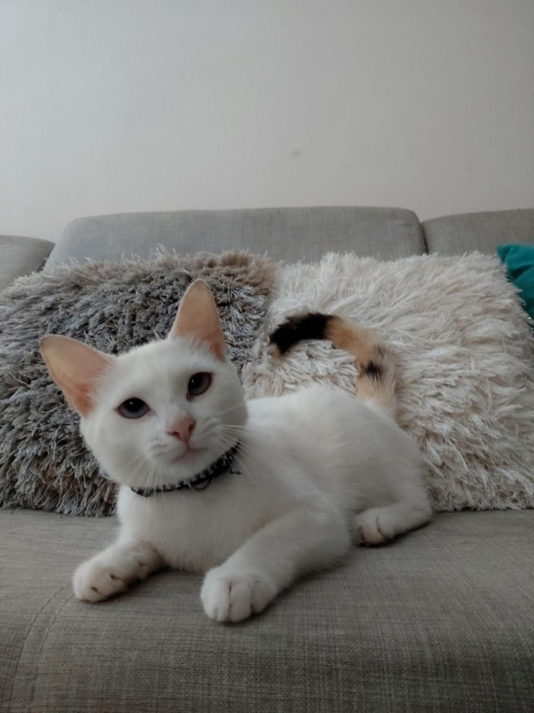
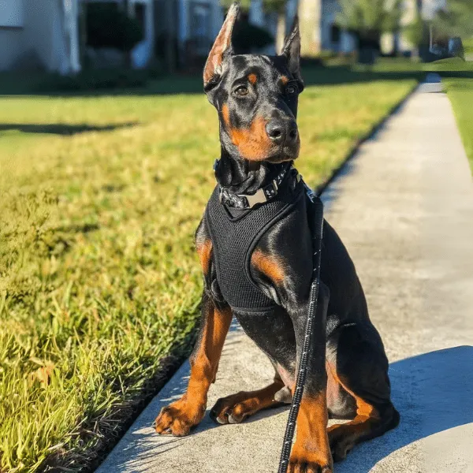

Carlitos (3 años)
Carlitos es mi segundo gato y se caracteriza por ser bastante tranquilo, cariñoso y, sobre todo,
muy flojo. Le encanta pasar la mayor parte del tiempo durmiendo o descansando, y su rutina diaria
gira prácticamente entre comer y dormir. Aun así, es un gato muy noble y relajado, perfecto para
momentos de calma.

Kira (9 meses)
Kira es mi tercera gata. Fue rescatada por mi sobrina y posteriormente la adopté. Es todo lo
contrario a Carlitos: muy energética, curiosa y escurridiza. Tiene ojos azules y pelaje blanco,
y se destaca porque siempre parece tener hambre. No es agresiva, pero cuando intentas cargarla
o acercarte demasiado, suele salir corriendo. Tiene una personalidad muy activa y particular.

Proximamente...
El Doberman es una de las razas de perro que más me gustan y es una meta personal poder tener
uno en el futuro. Me llama la atención por su carácter protector, su inteligencia y su presencia.
Es una raza que admiro y que me gustaría incluir en mi vida más adelante.